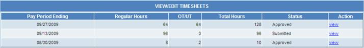
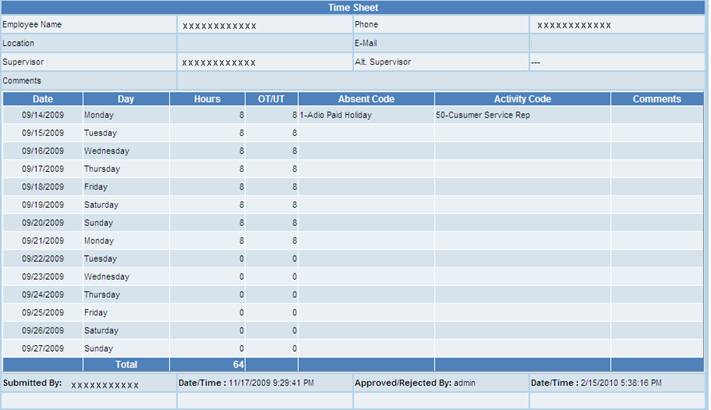

Timesheets
View/Edit Mode
This option will allow eligible
employees to enter their bi-weekly timesheets in the system for the current pay
period or past pay periods. Click on Create link to enter
timesheet for the first time for a given pay period, then Timesheet entry
screen shows up (mimicking a paper timesheet that you are familiar with), where
the user can enter hours worked for each day of the pay period. For each
day one can select an activity code associated with their work for the
day. Upon completion of the hours for all days of the pay period, click
on Submit button link to send the timesheet for your supervisor
to approve. The user can also have the option to Save without
submitting and come back later to complete the timesheet.

Once the user submitted his/her
timesheet for approval, the employee can only view or print option unless the
supervisor rejected it to correct further. The employee can view all
their previous timesheets at any time. When we click on the View
button it will display the following screen containing employee time sheet.
